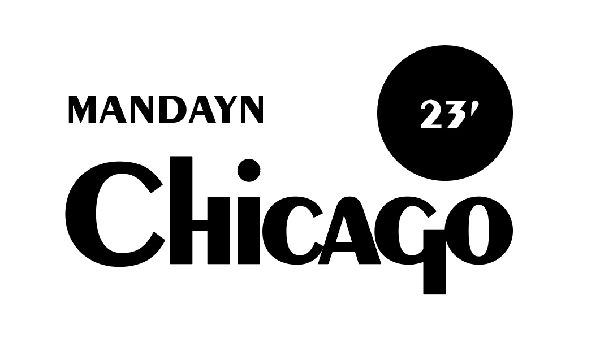

Announcing the MANDAYN 2023 location
Ladies and gentlemen, it is with great excitement that we unveil the location for the highly anticipated Mandayn networking conference of 2023: the vibrant and dynamic city of Chicago! Nestled in the heart of the Midwest, Chicago has long been hailed as a powerhouse of business and commerce, with a rich tapestry of traditions that have shaped its entrepreneurial spirit. From the titans of industry who once walked these streets to the iconic exchanges that hum with the rhythm of trade, Chicago stands tall as a testament to the resilience and ingenuity of the American business landscape.
As we gather in this magnificent city, we pay homage to the pillars of industry that have thrived here, from the bustling stockyards to the skyscrapers that pierce the heavens. Chicago's diverse and thriving economy encompasses a myriad of sectors, ranging from finance and manufacturing to technology and healthcare. With its strategic location as a transportation hub and its reputation as a center for innovation and creativity, Chicago provides the ideal backdrop for fostering collaborations and igniting the fires of progress.
Moreover, Chicago's entrepreneurial ecosystem is second to none. The city's bustling startup scene, bolstered by renowned incubators and accelerators, has nurtured countless success stories, giving birth to disruptive ideas and trailblazing ventures. This thriving ecosystem, combined with Chicago's deep-rooted commitment to community and social responsibility, makes it the perfect stage for Mandayn to celebrate the transformative power of business and its potential to shape a better world.
Join us as we gather in the Windy City, where history intertwines with modernity, where the spirit of enterprise converges with the art of collaboration. Together, we will embark on a remarkable journey of networking, learning, and inspiration, fueling the fires of innovation and pushing the boundaries of what is possible. Chicago beckons, and the stage is set for Mandayn 2023 to leave an indelible mark on the annals of business history. See you in the city that knows no limits!
About the Conference
The Mandayn networking conference has a storied history that traces its roots back to the picturesque city of Tacoma. It was in Tacoma where the inaugural conference took place, bringing together visionaries, entrepreneurs, and business leaders in a vibrant exchange of ideas. As the conference gained momentum and acclaim, it embarked on a journey to the enchanting island of Catalina, where attendees experienced the perfect blend of relaxation and intellectual stimulation against the backdrop of breathtaking natural beauty. Over the years, the conference has evolved into a premier gathering of thought leaders, traversing different cities and leaving an indelible mark on each location it touches.
Board of Directors
Contact
We are always open to new collaborations and opportunity. Reach out to percy@mandayn.com for more information.